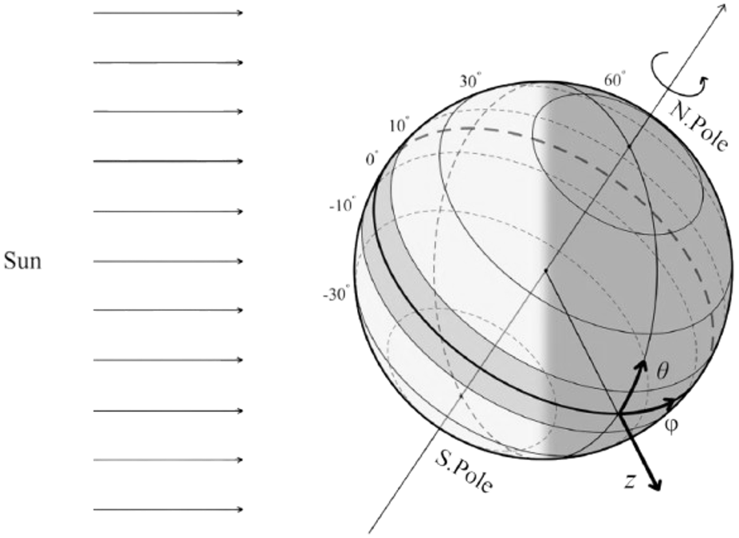

Baroclinic Instability
Weather maps at mid-latitudes invariably show the presence of wavelike horizontal excursions of temperature and pressure contours, superposed on eastward mean flows such as the jet stream.
They seem to be propagating as Rossby waves,
but their erratic and unexpected appearance suggests that they are not forced by any external agency,
but are due to an inherent instability of mid-latitude eastward flows.
In other words, the eastward flows have a spontaneous tendency to develop wavelike disturbances
The poleward decrease of solar irradiation results in a poleward decrease of air temperature and a consequent increase of air density. And by the thermal wind relation, eastward flow velocity must increase with height. A system with inclined density surfaces has more potential energy than one with horizontal density surfaces, making the arrangement possibly unstable. Instability of baroclinic flows that releases potential energy by flattening out constant density surfaces is called the baroclinic instability

Consider a simple basic state in which the density increases northward at a constant rate
$\partial \overline{\rho} / \partial y$ and is stably stratified in the vertical with a uniform
buoyancy frequency $N$. According to the thermal wind relation, the constancy of
$\partial \overline{\rho} / \partial y$ requires that the vertical shear of the basic eastward flow
$U(z)$ also be constant. The $\beta$-effect is neglected here since it is not essential for the
instability (The $\beta$-effect does modify the instability, however)

1Sukhanovskii, A., Stepanov, R., Bykov, A. et al. Mid-latitude baroclinic waves in a zonally homogeneous Earth-like planet. Clim Dyn 63, 74 (2025).